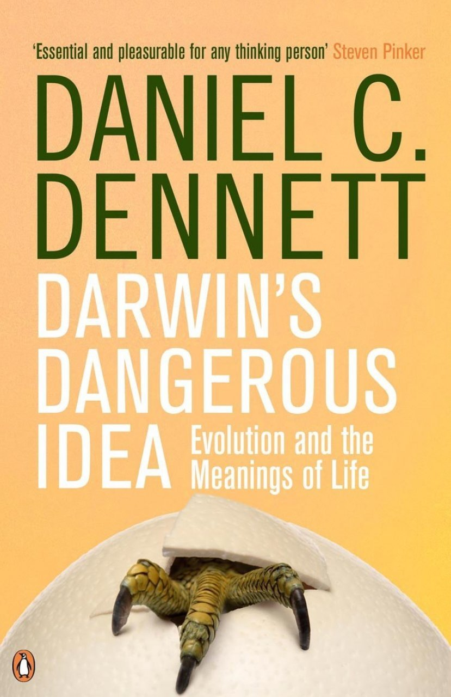
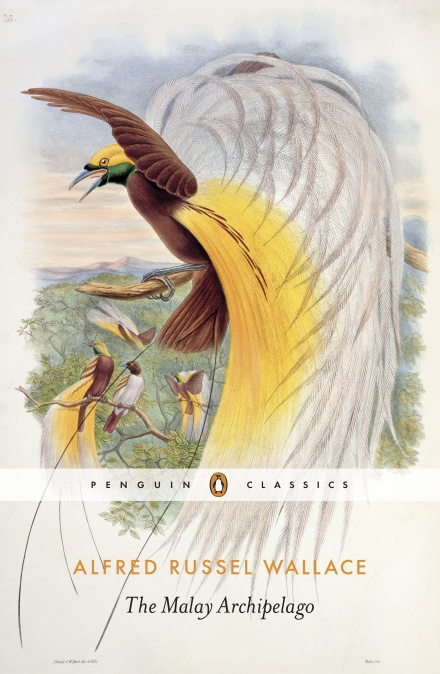
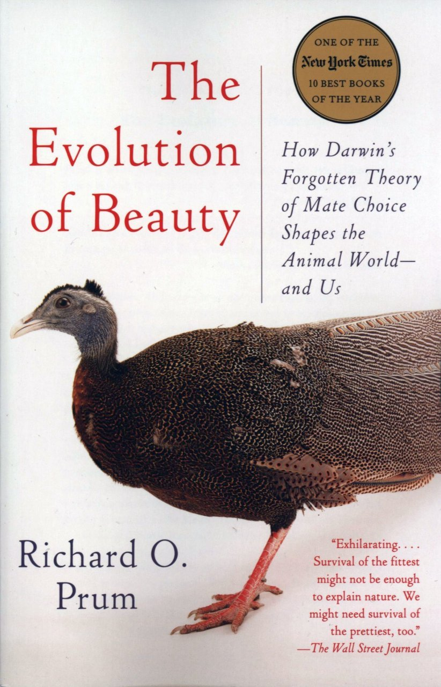

evolReads/
Evolutionary Biology.
Classics Works/
- Zoonomia; or the Laws of Organic Life | Erasmus Darwin (1794)
- Zoological Philosophy, or Exposition with Regard to the Natural History of Animals | Lamarck (1809)
- The Voyage of the Beagle | Darwin (1839)
- On the Origin of Species | Darwin (1859)
- Evidence As To Man’s Place In Nature | Huxley (1863)
- The Malay Archipelago | Wallace (1869)
- The Descent of Man, and Selection in Relation to Sex | Darwin (1871)
- The Expression of the Emotions in Man and Animals | Darwin (1872)
- Darwinism: An Exposition of the Theory of Natural Selection, with Some of Its Applications | Wallace (1889)
Modern Works/
- The Selfish Gene | Richard Dawkins (1976)
- The Mismeasure of Man | Stephen Jay Gould (1981)
- The Extended Phenotype | Richard Dawkins (1982)
- The Blind Watchmaker | Richard Dawkins (1986)
- Wonderful Life | Stephen Jay Gould (1989)
- The Third Chimpanzee | Jared Diamond (1992)
- Darwin’s Dangerous Idea | Daniel Dennett (1995)
- The Major Transitions in Evolution | John Maynard Smith & Eörs Szathmáry (1995)
- The Beak of the Finch | Jonathan Weiner (1995)
- Evolution: What the Fossils Say and Why It Matters | Donald Prothero (2007)
- Why Evolution is True | Jerry Coyne (2009)
- Evolution: The First Four Billion Years | Michael Ruse & Joseph Travis (2009)
- The Link: Uncovering Our Earliest Ancestor | Colin Tudge (2009)
- Life Ascending: The Ten Great Inventions of Evolution | Nick lane (2010)
- The Ancestor’s Tale | Richard Dawkins & Yan Wong (2016)
- Improbable Destinies | Jonathan Losos (2017)
- The Evolution of Beauty | Richard O. Prum (2018)



Textbooks/
- Genetics and the Origin of Species | Theodosius Dobzhansky (1937)
- Evolution: The Modern Synthesis | Julian Huxley (1942)
- Systematics and the Origin of Species | Ernst Mayr (1942)
- The Growth of Biological Thought: Diversity, Evolution, and Inheritance | Ernst Mayr (1982)
- Toward a New Philosophy of Biology: Observations of an Evolutionist | Ernst Mayr (1988)
- What Evolution Is | Ernst Mayr (2001)
- Speciation | Jerry Coyne & Allen Orr (2004)
- Evolution: the Extended Synthesis | Massimo Pigliucci & Gerd B. Müller (2010)
- Evolutionary Analysis — 5th Edition | Jon Herron & Scott Freeman (2013)
- Essential Readings in Evolutionary Biology | Francisco Ayala & John Avise (2014)
- Evolution — 4th Edition | Douglas Futuyma & Mark Kirkpatrick (2017)
- Evolution: Making Sense of Life — Third Edition | Douglas Emlen & Carl Zimmer (2019)
Biographies/
- The Autobiography of Charles Darwin | Darwin (1887)
- My Life: A Record of Events and Opinion | Wallace (1905)
- Darwin: The Life of a Tormented Evolutionist | Adrian Desmond & James Moore (1994)
- Charles Darwin: A Biography / Vol. 1 — Voyaging | Janet Browne (1995)
- Charles Darwin: A Biography / Vol. 2 — The Power of Place | Janet Browne (1995)
- Alfred Russel Wallace: A Life | Peter Raby (2001)
- Alfred Russel Wallace: A Rediscovered Life | Michael Flannery (2011)
- The Invention of Nature: Alexander von Humboldt’s New World | Andrea Wulf (2015)
- A Modest Genius: The Story of Darwin’s Life and How His Ideas Changed Everything | Hanne Strager (2016)



